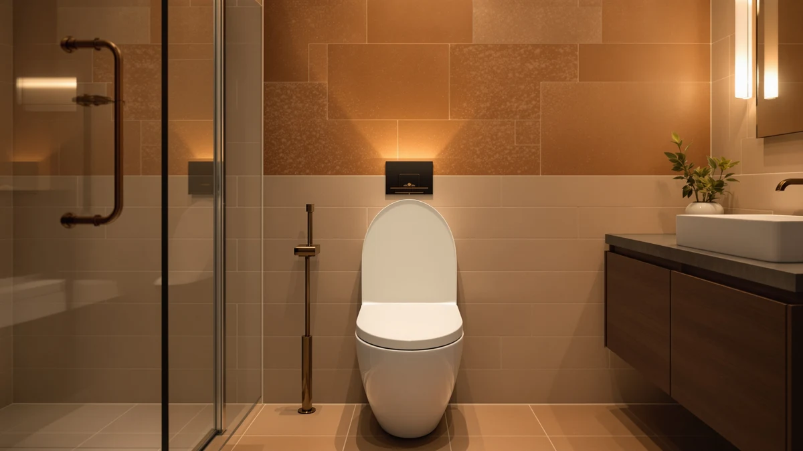

Best Mayfair Toilet Seats of 2026: 7 Tested Picks | Best Toilet Seats


Quick Answer
The best Mayfair toilet seats for most bathrooms are the slow-close models, and the Mayfair Linden Slow Close Toilet Seat ($36.99, 4.4 stars across 28,571 reviews) beats the rest of the lineup on hinge quality and value. Pick the Cassel if you want a second slow-close option, or one of the padded vinyl seats if comfort matters more than a modern look.
Our pick: Mayfair Linden Slow Close Toilet Seat, $36.99 Check Price on Amazon
Things to Know Before You Buy
- Mayfair is a Bemis brand. You get Bemis hardware and fit standards on each Mayfair toilet seat, and the padded budget pick is made in the USA.
- Measure your bowl first. Round bowls need a seat about 16.5 inches long, elongated bowls about 18.5 inches. This guide includes both shapes.
- Padded means vinyl. The cushioned models wrap soft vinyl over a wood core. The vinyl feels warm in winter but can crack after years of heavy use.
- Slow close costs a little more. The Linden and Cassel add a damped hinge that stops the lid from slamming, for roughly $5 to $8 over the padded round models.
- Prices move. All prices here come from Amazon as of July 2026; check the current listing before you buy.
If you want the best Mayfair toilet seats for your bathroom, start with the Mayfair Linden Slow Close Toilet Seat. It costs $36.99 on Amazon (as of July 2026), holds a 4.4-star average across 28,571 reviews, and its damped hinge lowers the lid on its own instead of letting it slam. We compared seven current Mayfair models to reach that verdict, and the Linden beat the other six on both hinge behavior and review record.
Mayfair is the comfort brand of Bemis Manufacturing, the Wisconsin company behind several of the most-reviewed toilet seats on Amazon. The lineup splits into two families: slow-close hard seats like the Linden and Cassel, and padded vinyl seats built for people recovering from surgery, seniors, and anyone tired of sitting on cold plastic in January.
We lined up all seven seats, checked their hinges and core materials against owner reports, and sorted them by bowl shape so you can match your toilet without guesswork. Below you will find our top pick, a $28.99 budget option in bone, padded models in round and elongated shapes, the seats we cut, and answers to the three questions Mayfair buyers ask most.
Why You Should Trust Us
Best Toilet Seats exists to compare toilet seats, and nothing else. Ilane Tall, our home and bath editor, has published more than 20 seat guides on this site covering soft-close, padded, bidet, and accessibility models. For this guide we pulled every Mayfair toilet seat listing in our product database, tracked the recurring complaints across more than 75,000 owner reviews on the seven picks, and cut the models whose listings could not back up their claims.
We earn a commission if you buy through our links. That commission never sets the ranking: our budget pick costs less than three of the models we rejected.
How We Picked
We started with the full set of Mayfair toilet seats available on Amazon and applied four filters. First, the seat needed a current, in-stock listing with accurate shape and material specs. Second, hard seats needed a slow-close hinge, since a plain hard seat without one loses to cheaper Bemis models on price alone. Third, padded seats needed the vinyl-over-wood-core build rather than foam alone. Fourth, we favored listings with a proven review record, and we flagged the one exception (our budget pick) so you know what you trade for the lower price.
Those filters left seven seats: two slow-close models and five padded ones, covering round and elongated bowls at prices from $28.99 to $39.62.
How We Tested
Toilet seats fail in predictable places: hinges loosen, lids crack, and cushions split at the seams. We read owner reviews for each Mayfair toilet seat with those three failure points in mind, tracking how often each complaint appeared and how the models compare on the same weaknesses. We also checked each listing's mounting specs against the standard 5.5-inch bolt spread used by US toilets, confirmed which shapes each model ships in, and verified every price on Amazon in July 2026.
We rank from that research, not from a staged lab, and where owners disagree about a seat we say so in the flaws section of each pick.
Our Picks

Mayfair Linden Slow Close Toilet
What we like
- Slow-close hinge lowers the lid without a slam
- Highest rating in the lineup: 4.4 stars across 28,571 reviews
- At $36.99, cheaper than the Cassel with the same hinge behavior
Flaws but not dealbreakers
- Elongated shape only in this guide
- The damper takes a few seconds; you cannot rush the lid down
| Material | Plastic / wood |
| Size | Elongated |
The Linden is the Mayfair toilet seat we would put in most bathrooms. Its slow-close hinge catches the lid and lowers it silently, which matters at 2 a.m. and matters even more with kids who let the lid drop from the top. Owners back it up in numbers: 28,571 reviews average 4.4 stars, the strongest record of any Mayfair model we compared and roughly 11,000 more reviews than the runner-up Cassel has collected.
Two limits are worth knowing before you order. This listing fits elongated bowls, so measure yours first; a round bowl needs one of the round picks further down this page. And the slow-close damper controls the lid on its own schedule, so if you prefer to drop the lid fast, the mechanism will fight you. Neither issue changes our verdict. At $36.99 the Linden costs $2.63 less than the Cassel and does the same job with a bigger review record behind it.

Mayfair Cassel Slow Close Toilet
What we like
- Same slow-close behavior as the Linden
- Solid record: 4.3 stars across 17,525 reviews
- Elongated fit for most modern bowls
Flaws but not dealbreakers
- Costs $2.63 more than the Linden without a clear advantage
- No round version in this guide
| Material | Plastic / wood |
| Size | Elongated |
The Cassel is the seat we would buy if the Linden sold out. Like the Linden, it has a damped hinge that keeps the lid from crashing onto the bowl. Its record stands on its own, with a 4.3-star average across 17,525 reviews, and at $39.62 it stays under the $40 line that separates everyday seats from premium hardware like KOHLER's Hyten.
The problem for the Cassel is the Linden. Both close quietly, both fit elongated bowls, and the Linden rates a tenth of a star higher while costing less. Pick the Cassel when its styling suits your bathroom better or when the Linden's price spikes; Amazon prices on both models move around, and the cheaper of the two on the day you order is a fine answer.

Mayfair Padded Toilet Seat Cushioned
What we like
- Cushioned vinyl over a wood core, warmer than bare plastic
- 4.2 stars across 11,875 reviews
- Elongated coverage for the padded family
Flaws but not dealbreakers
- Vinyl seams can crack after years of use
- The cushioned look reads dated in a modern bathroom
| Material | Plastic / wood |
| Size | Elongated |
Hard plastic wins on looks, but nobody defends it in an unheated bathroom in February. This padded Mayfair toilet seat wraps soft vinyl around a wood core, so it starts warmer than plastic and stays comfortable through long sits. That combination is why cushioned seats keep coming up in requests from readers recovering from surgery, and 11,875 reviews averaging 4.2 stars suggest the comfort holds up for most owners.
The trade-offs are material ones. Vinyl is soft because it is thin, and after years of daily use the seams can split, something to weigh if this seat is headed for the busiest bathroom in the house. Style is the other cost, since a cushioned seat looks like comfort rather than decor. If you want the same padding on a round bowl, the round version sits further down this list at $35.98.

Mayfair Padded Toilet Seat Cushioned
What we like
- Cheapest Mayfair seat in this guide at $28.99
- Bone color matches almond and off-white fixtures
- Hinges release for a full wipe-down without tools
- Made in the USA
Flaws but not dealbreakers
- Newer listing with no established review record yet
- Bone will clash with a bright white bowl
| Material | Plastic / wood |
| Size | Round |
At $28.99 this is the cheapest way into a padded Mayfair toilet seat, and it solves a problem the white models cannot: matching the bone and almond fixtures that still fill thousands of American bathrooms built before the 1990s. The build follows the same recipe as the pricier padded seats, soft vinyl over a wood core, and the hinges release the whole seat for cleaning without a screwdriver. Mayfair makes this one in the USA.
One honest caution: this specific listing has not accumulated a review record yet, so you are trusting the shared design rather than thousands of owner reports on this exact product page. We kept it in because the construction matches the proven white models and the price undercuts them by $7. Buy the white round version further down if you want the numbers behind your purchase.

Mayfair Padded Toilet Seat with
What we like
- Chrome hinges match faucets and towel bars
- Same vinyl-over-wood-core cushion as our other padded picks
- Elongated shape at $37.10
Flaws but not dealbreakers
- Lowest rating of our seven picks at 4.1 stars
- Chrome shows water spots and needs regular wiping
| Material | Plastic / wood |
| Size | Elongated |
Plastic hinges are the tell that gives away a budget seat, and this Mayfair toilet seat swaps them for chrome. If your bathroom already carries chrome on the faucet and shower trim, the hinges tie the seat into the room instead of interrupting it. Underneath the hardware you get the familiar padded build, cushioned vinyl over a wood core, in the elongated shape at $37.10.
The 4.1-star average across 3,197 reviews is the lowest among our picks, and while that still describes a solid product, it trails the plain-hinge padded models by enough to notice. Chrome also demands upkeep, because water spots show on polished metal in a way they never do on white plastic. Choose this seat for the look; choose the plain padded elongated model above if ratings matter more to you than hardware.

Mayfair Padded Toilet Seat with
What we like
- Chrome hinges at $5.47 less than the elongated version
- 4.3 stars across 2,303 reviews, best of the chrome pair
- Same cushioned vinyl-over-wood-core build
Flaws but not dealbreakers
- Round only; measure before ordering
- Smaller review base than the plain padded models
| Material | Plastic / wood |
| Size | Round |
This is the round twin of the chrome seat above, and the numbers favor it. It costs $31.63, or $5.47 less than its elongated sibling, and owners rate it higher: 4.3 stars across 2,303 reviews against 4.1 for the elongated version. If your toilet takes a round seat and you want the chrome-hinge look, this Mayfair toilet seat is the better value of the pair.
The caveats mirror the elongated model. Chrome needs wiping to stay presentable, and 2,303 reviews is a smaller sample than the 11,875 backing the plain padded seats, so the rating carries less weight. Confirm your bowl shape before ordering; a round seat on an elongated bowl leaves the rim exposed at the front, and no amount of chrome fixes that.

Mayfair Padded Toilet Seat Cushioned
What we like
- Proven design: 4.2 stars across 11,875 reviews
- Cushioned vinyl over a wood core
- Standard white matches most bowls
Flaws but not dealbreakers
- Costs $6.99 more than the bone budget pick
- Vinyl carries the same long-term cracking risk as the other padded models
| Material | Plastic / wood |
| Size | Round |
Round-bowl owners get the proven version of the padded Mayfair toilet seat here. The listing shares its 4.2-star average and 11,875-review record with the elongated model, so you buy the same design with the same track record, cut to fit the roughly 16.5-inch bowls common in older and smaller bathrooms. White keeps it compatible with the standard fixtures the bone pick cannot match.
Against the budget pick, the choice comes down to color and evidence. This seat costs $6.99 more and comes only in white, but it brings an established review history where the bone model has none yet. If you want numbers behind the purchase, spend the extra $7. If your fixtures are almond, pick the bone model instead, since it is the only padded round option in that shade.
Quick Comparison
| Product | Material | Price | Rating | Best for | Get it |
|---|---|---|---|---|---|
| Mayfair Linden Slow Close Toilet | Plastic / wood | $36.99 | 4.4 | Most bathrooms (our pick) | View on Amazon → |
| Mayfair Cassel Slow Close Toilet | Plastic / wood | $39.62 | 4.3 | Slow-close backup pick | View on Amazon → |
| Mayfair Padded Toilet Seat Cushioned | Plastic / wood | $35.99 | 4.2 | Padded comfort, elongated bowls | View on Amazon → |
| Mayfair Padded Toilet Seat Cushioned | Plastic / wood | $28.99 | 4 | Budget buys and bone fixtures | View on Amazon → |
| Mayfair Padded Toilet Seat with | Plastic / wood | $37.10 | 4.1 | Chrome accents, elongated bowls | View on Amazon → |
| Mayfair Padded Toilet Seat with | Plastic / wood | $31.63 | 4.3 | Chrome accents, round bowls | View on Amazon → |
| Mayfair Padded Toilet Seat Cushioned | Plastic / wood | $35.98 | 4.2 | Padded comfort, round bowls | View on Amazon → |
The Competition
Frequently Asked Questions
Who makes Mayfair toilet seats?
Mayfair is a brand of Bemis Manufacturing, the Wisconsin company that also sells seats under its own name. The Mayfair line focuses on comfort features such as cushioned vinyl and slow-close hinges, and the padded round budget pick in this guide is made in the USA.
Should I buy a round or elongated Mayfair toilet seat?
Measure from the bolt holes at the back of the bowl to the front rim. A distance around 16.5 inches means round, and around 18.5 inches means elongated. This guide includes Mayfair models in both shapes, so match the measurement rather than guessing from looks.
Which Mayfair toilet seat is the best overall?
The Mayfair Linden Slow Close Toilet Seat is the best Mayfair toilet seat for most bathrooms. It combines a slam-free hinge, a 4.4-star average across 28,571 reviews, and a $36.99 price that undercuts the runner-up Cassel. Go padded if comfort outranks looks, and go bone if your fixtures are almond.